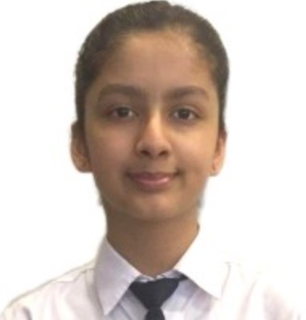

Sanvee Seth
Hey there! Welcome to my website. I am Sanvee, and here you can find every little detail about me, my personality traits & my life. So here are a bunch of basic details, mentioned below:-
• Date of Birth: July 26th 2010
• Nationality: Indian
• School: BBPS, Grh (New Delhi)
• Age: 12yrs
• Hobbies: Singing, Reading, Coding & Swimming
• Parents: Arvind Seth & Sonal Seth
All About Me
Here's a bit about more in detail about me. I love reading books. Some of my favourites are Percy Jackson, Tuck Everlasting, The girl who drank the moon, Harry Potter, Sleepover Club, The Hunger Games, A Wrinkle in Time & The Time Machine. I adore authors like Rick Riordan, Sudha Murthy, Ruskin Bond, J.K. Rowling, H.G. Wells, Jaqueline Wilson, Munshi Premchand & Roald Dahl. I write my own stories too! I prefer sports like swimming and running. I have got many medals in them. They are 2 things I am good at and I love them! I also like to sing, it's my hobby at school. I am in the school choir as well. I like singing english & punjabi songs a lot. I am fond of making powerpoint presentations, it's one of the things I think I'm really good at. I like to code, on scratch, python, and html. I am fond of eating Indian street food, with all the rich and spicy flavours & chutney like Samosa, Kachodi, Chole-Bhature & Punjab's special Chole-Kulche! My birthday falls on July 26th, which is also my cousin's birthday. I am a vegetarian. My favourite colour is purple. Whenever, wherever I am, I always miss my school a lot, even if I just got into the bus to go home. I love my school, my teachers & my friends. It's amazing, having fun with my friends, learning new things with the teachers, etc. I usually don't watch movies or web series, but recently I watched Wednesday, it's horror, comedic & fun to watch, with my sister. I like math & science a lot. They're my favourite subjects. Oh and I'm in 7E, BBPS, Grh (New Delhi). I like the number 6. I like participating in all the competitions and activities of the school. Each time there's something new and creative! Speaking of which, with this button below, you can check out more information about some of the things I participated in/won since I came to the Middle Deptt (Class 6 & 7).
Click here to know more about me
Jump to Page 3
Contact me at:
sanveeseth2607@gmail.com
Official:
514478@gr.balbharati.org